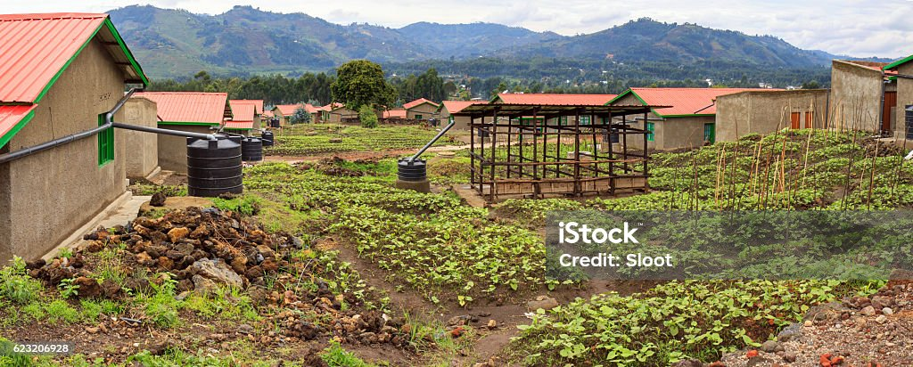
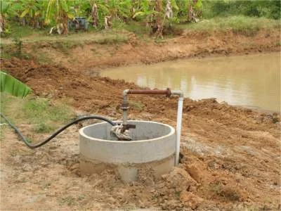
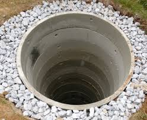

Methods of Rainwater Harvesting
Various techniques can be used to collect and store rainwater effectively. Here are some common methods:
1. Rooftop Rainwater Harvesting
Collecting rainwater directly from rooftops and channeling it into storage tanks or barrels. This method is ideal for homes and buildings, allowing the water to be used for household purposes or gardening.
2. Surface Runoff Harvesting
Involves capturing rainwater that flows on the ground surface. Surface runoff is collected in reservoirs, ponds, or tanks, making it suitable for irrigation or recharging groundwater levels.
3. Recharge Pits
Recharge pits are excavated structures that allow rainwater to percolate into the ground, replenishing groundwater levels. This method is commonly used in areas with low water tables.
4. Percolation Tanks
These are shallow, dug-out structures designed to hold and gradually absorb rainwater into the soil. Percolation tanks are particularly useful in areas with loose soil that can easily absorb water.